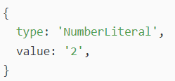
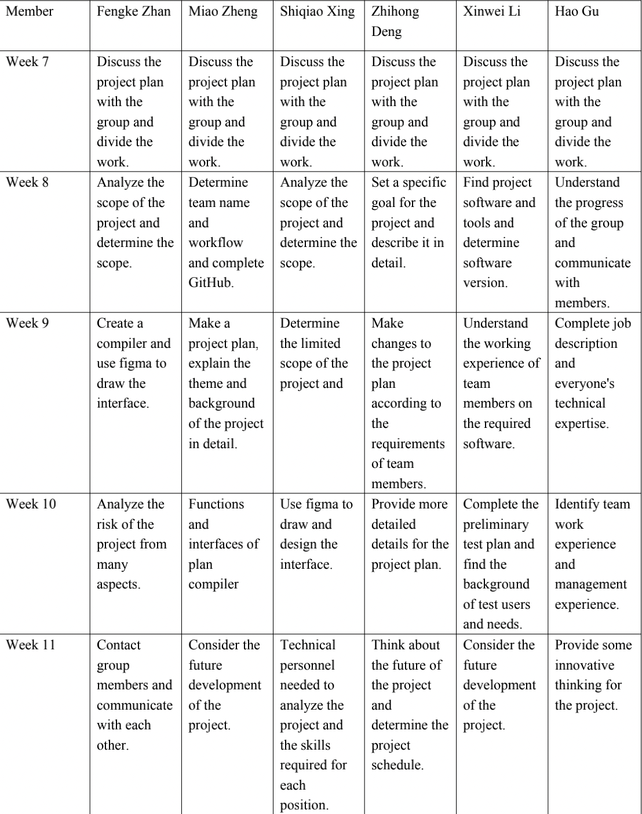
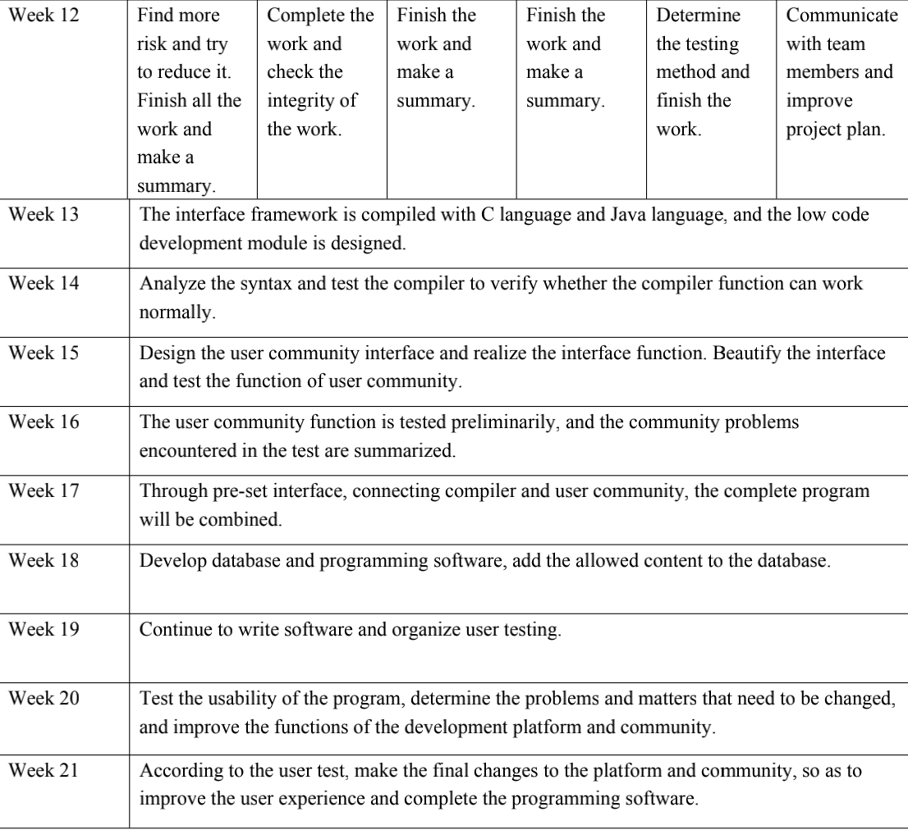

Miao Zheng

Hello, everyone. I'm Zheng Miao and a member of Team Six. My student ID is 3860862. I am a RMIT student from China. This is the first year of my bachelor's degree in Information Technology in RMIT. I hope this will be a good start for me to study abroad. Unfortunately, due to the covid-19 virus, I had to stay in China to attend classes through canvas. I have many hobbies, however which I have to mention most is table tennis. I used to be a professional table tennis player, the unique charm of this sport deeply attracted me. Now I am no longer a table tennis player, but an it student. At the same time, I also like to watch other types of sports, such as the Champions League and NBA. My favorite teams are Barcelona and Team Los Angeles Lakers. As for my passion for it, I started when I was a child. When I was a child, I was curious that an iron box and a screen can do so many things. It wasn't until I grew up that I realized that there was something called code behind the creation of these applications and displays. It's really interesting, as if code is everything. Later, I chose it major. This time, I don't want to be just a spectator, I want to be a creator, learning and making progress in the world of information technology. My IT experience can only be said to have just reached the level of a beginner. I have used java language to create train ticket management system, and used Python to create some small games and web crawlers. I hope I can get in touch with bigger it projects through my future study.
Fengke Zhan
My name is Fengke Zhan. My Student ID is 3860870. I come from Shenzhen, a city lies in south of China which is next to Hongkong. My major is Information Technology and it's my first year in RMIT. Honestly I have never been to overseas yet and my English is not that well. It's hard for me to understand some internet slang that my classmates or teachers saying and sometime I am really confusing what they are talking about. But learning about different culture is interesting for me. I also have many hobbies like traveling, playing basketball(though not good at it) and playing video games, espiceally FPS games such as CSGO or APEX. My first FPS game is CS1.5, I play it when I was 6. However, my favorite video game is Destiny2 which I have played for more than 1000 hours. Except for games, I also like reading some science fictions espiceally about the universe. It makes me can't help to think about the secrets of the universe and I believe that IT can help us figure out more secrets about the univers. I start to interest in IT since I was 6. When I first time access to video games, I started to wonder what IT can do more. When I grow up, I read a book about Bill Gates. As we all known, Microsoft exactly benefit people's lives. I also want to use IT to convenient daily lives and make more fun.
Shiqiao Xing

My name is Xing Shiqiao. My student ID is 3860951. I come from Hohhot, Inner Mongolia. My hometown is in the north of China. My major is information technology. This is my first year in computer science and technology. To be honest, I haven't been to Australia and have been taking online classes. I am very interested in learning with students from different cultural backgrounds! I like traveling very much. I have been to more than 80 cities in China. I like to experience different customs. I also look forward to traveling to different countries overseas in the coming days. Besides traveling, I like playing music very much. I can play piano and saxophone. Music allows me to relax and make a lot of friends who have the same music hobby. I was very interested in it when I was very young. When I was a child, I saw others typing on the keyboard to achieve different computer functions. I felt that the computer was very magical and could help us solve many difficulties in our daily life.
Zhihong Deng

My name is ZhiHong Deng, you can call me jim. My student ID is 3860863. I am from Zhuhai, China, a very beautiful coastal city. I am currently studying for the Bachelor of Information Technology at RMIT. I don't have many hobbies, there are only three main hobbies, playing guitar, fitness and photography. I have been training in the gym for three years. I am embarrassed to release photos of my muscles here. If you are also interested in fitness, we can go to the gym to work out together when I can go to Melbourne to study. You can contact me through my WeChat or email. Of course, we can also play the guitar or take pictures together. The place I am most interested in IT is that I can write a web page or program by myself and add details according to my preferences, which is very fulfilling. I had this idea when I first came into contact with computer games when I was in primary school. The official website and client of the game at that time were not as user-friendly as they are now, and it was not smooth to use, so I wanted to improve it at that time.
Hao Gu
My name is Gu Hao, I am from China, a city is called Foshan. I am so glad to come to RMIT university, my major course is Information Technology .I have huge interests in IT(although my level is just a bit.) My favorite hobby is sport which include basketball and workout in the gym. I have had studied in REW in 2019 for a period which was a very wonderful experience. I love teachers’ way in education, makes me gained much more knowledge about Australia, is quite a powerful nation in tourism and education and other parts associated with many other nations. And I love Australia so much. I was getting in touch with computer when I am in secondary school. The IT world attracted me in many fields, I was wondering how could a machine so powerful could connect with all the planet. That was the first sight which I am so interested in IT course . And a few yeas ago I went to a power plant that I have seen so many huge machines were controlling just by a computer ,and then make power to thousands and thousands families to use in life. What an unbelievable story, I will not trust if I had seen it by myself. Thus that I have made a plan to how to handle with this my dream course.
Xinwei Li

I am an international student from China. And my student ID is 3816123. There are great differences between Chinese and Western cultures. My study experiences before University are in China. However, I want to get higher education overseas. So that, I improve my English skill by studying IELTS. Therefore, I can speak Chinese and English. Now I expect to study computer language. In my childhood, when I watched science fiction film the screen shows the future technology had attracted my attention. In my past, I was modelling and understanding of systems programming, network engineering knowledge and information, but also the first time concerned about the new generation of technology products release. I self-taught assembled my first desktop computer, installed the windows system.In my opinion, I was attracted by information technology when I was a child. I want to get more knowledge about IT, in order to change my life style. When I was young, I was very lucky to visit the science and technology exhibition of Hong Kong University of science and technology. Since then, I think it is a very cool subject.
Group Processes
In general, the work of our team in assignment 2 is progressing very smoothly. In terms of division of labor, each of us has made a decision very early, choosing what we want to be responsible for and putting it into action. Obviously, this way is very efficient. Everyone focuses on their own parts. After all the work is completed, one person will gather them together to form a complete report and put the content on the group's website. However, the assignment requirements of assignment 3 are different from those of assignment 2. Project plan accounts for a large proportion in assignment 3, which means that the team members need to have more communication in their work and work together towards the final goal in the conversation.
Career Plans

As in assignment 2, most members are more interested in artificial intelligence. Artificial intelligence is a subject that makes computer simulate some thinking process and intelligent behavior of human (such as learning, reasoning, thinking, planning, etc.), mainly including the principle of realizing intelligence by computer, making computer similar to human brain intelligence, so that computer can realize higher level application. Moreover, in terms of the current computer environment, artificial intelligence is bound to become the mainstream of science and technology in the future. It looks more like the person who can occupy a place in the field of artificial intelligence has better employment prospects. Other members are more interested in the development of front-end web. Front end development is the process of creating web pages or app and other front-end interfaces to present to users. Through HTML, CSS and JavaScript and various technologies, frameworks and solutions derived from them, the user interface interaction of Internet products can be realized.
It is obviously unreasonable to compare AI with front-end development. Artificial intelligence will involve computer science, psychology, philosophy and linguistics. It can be said that almost all disciplines of natural science and social science have gone far beyond the scope of computer science. The relationship between artificial intelligence and thinking science is the relationship between practice and theory. Artificial intelligence is at the technical application level of thinking science, and is an application branch of it. The front-end development evolved from web page production, and the name has obvious characteristics of the times. In the evolution of the Internet, web page production is the product of the Web1.0 era. The main content of the early website is static, mainly pictures and text, and the behavior of users using the website is mainly browsing. In short, AI requires a wider range of skills than front-end development. Front end development focuses on the use of HTML, CSS, JavaScript and HTTP and other network protocols; AI programming skills are more advanced, and need to have a high degree of creativity.
Tools
Individual website links of Assignment 1
Miao Zheng - leozheng-Miao.github.io
Fengke Zhan - zfk0508.github.io
Shiqiao Xing - shiqiaoxing.github.io
Zhihong Deng - jimdzh.github.io
Xinwei Li - martinilupin.github.io
Hao Gu - haogus3729549.github.io
Group Github Repository Link(just click here)
Comments of Git
As in assignment3, before the division of labor, our team established a GitHub group, where everyone can browse and upload files. With the experience of working with assignment2, we are more proficient in the operation of Github.
Meetings on Teams
Overview
Topic
The project is building an application, a combination of a low code development platform and a user communication community. This platform combines the functions of the development platform and the user community. Users can not only develop code in the platform, but also communicate with other users in the community to learn and make progress together. In addition, the platform will also provide a basic tutorial on low code development and some exercises on low code development. Unlike traditional programming, the process of writing code in low code development is a bit like playing with Legos. Each function module is like a Lego component. Different combinations can get different functions of the program. Reduce the difficulty of learning code and increase the interest of learners. Users can also further study the detailed code of each functional module in the platform. By clicking on the icon of each function module, the user can view the detailed code of each module. Users can also customize their own modules, upload their own modules or finished products to the community to share with other users.
Motivation
Today, people cannot do without smart devices and applications. Relatively speaking, the demand for learning programming is growing. The world will need more and more developers. In Europe alone, there will be more than 800,000 ICT job vacancies (Balanskat & Engelhard, 2015), and learning programming is a good direction. But in the process of developing programs, a considerable part of the programmer's work is repetitive and cumbersome, which also discourages many people who want to learn programming. And low-code development can solve this problem well. Speed is the biggest (and most obvious) benefit of the low-code approach. Using a low-code platform, developers can create new applications in hours or days instead of weeks or months (Stangarone 2016). Not only that, Stangarone (2016) mentioned that low-code development also has advantages such as increased IT productivity (without expanding the team) and reduced project failure rate. Low-code development can not only reduce the dependence on high-tech level, but also shorten the development time of the application. The development trend of low-code development is very optimistic. The low-code development platform market is expected to grow from USD 13.2 billion in 2020 to USD 45.5 billion in 2025, with a compound annual growth rate (CAGR) of nearly 30% during the forecast period (reportlinker 2020). The demand for digitization and the maturity of agile DevOps practices are expected to increase the use of the low-code development platform market on a global scale. Low code development has revolutionized the development model of existing software companies, making them more efficient, greatly reducing the repetitive work in the coding process, freeing programmers from the heavy business development process, and investing in more critical core code development, making the code output more valuable.
So in such an environment, the emergence of a more sophisticated low-code development software would be welcome. Users can not only carry out daily programming within the platform, but also communicate and learn with other programmers in the community. Moreover, the development mode of low code is more interesting, which makes the daily work of programmers more relaxed and happy. If the project is successfully completed, employers will intuit that low-code development will be advertised more quickly, because the combination of the development platform and the user community will retain more users.
Landscape
At present, there are a lot of low code development platforms on the Internet, just in China, there are dozens of low code development platforms. These platforms are all very much the same. They are tools for low code development. You can only do low code development within the platform. The main difference between our project and these platforms is that we have a community of low-code developers. I haven't found a community of low code developers on the Internet, only a small section of low code development can be found in the community of developers. So a combination of a low-code development platform and a low-code developer community will be very attractive.
Detailed Description
Aims
First of all, the biggest goal of the project was to create the program, a combination of a compiler and a user community. The goal can be divided into four sub-goals, the first is to create a compiler, the second is to create a user community, the third is to connect the compiler and the user community, and the last is to test the entire project.
1. Create a compiler
Create a compiler can be divided into 9 parts.
1.1 Planing
Plan the features of the low-code compiler and the appearance of the low-code development interface.
1.2 Design the interface of the compiler
The compiler can use figma to draw the interface. Planning the layout in advance requires a way to connect to the user community.
1.3 Compile the general framework
Use C language or JAVA to compile the framework of the interface drawn by Figma. In this step, there is no need to realize the function or do the steps of beautification.
1.4 Lexical analysis
Lexical analysis separates each keyword (also called tag) with spaces.
For example:
Paper 0
Pen 100
Line 0 50 100 50
As above, we can uniformly call the types of Paper, Pen, and Line as word, and the value is each word. Then we can collectively call the number type behind;
1.5 Syntax analysis
Syntax analysis is to traverse each mark, find grammatical information, and build an object called AST (Abstract Syntax Tree).
1.6 Conversation
We created an AST (Abstract Syntax Tree) structure in the grammatical analysis after the object generated by the lexical analysis, but the above AST structure is useless for us to create SVG files. In SVG, we can use elements to represent a Paper. Then the converter function converts the AST into another SVG-friendly AST.
1.7 Code generation
The generator function generates SVG code based on the new AST generated in the previous step.
1.8 Design low-code development modules
Encapsulate some commonly used codes into a module to form low-code development.
1.9 Preliminary testing
Initially test the effect of the compiler and improve it.
2. Create a user community
Building a user community can be divided into four parts
2.1 Planing
Plan the functions of the user community and what the user community interface looks like.
2.2 Design the user community interface
We can use an application such as Figma to draw the interface of the software, making it more convenient for later programming.When designing the user community interface, we need to reserve a place for the compiler.
2.3 Compile the general framework
Use C language or JAVA to compile the framework of the interface drawn by Figma. In this step, there is no need to realize the function or do the steps of beautification.
2.4 Realize the functions in the interface
Realizet the functions in the interface, connect each page together, and do preliminary testing.
2.5 Beautify the interface
Beautify the final interface according to the interface drawn in Figma before.
2.6 Preliminary testing
Preliminary testing of the functions of the user community.
3. Connect the compiler and the user community
According to the pre-reserved interface, the compiler and the user community are combined to form a completed program.
4. Final test
For the final test, this needs to be a very complete and serious test to reduce bugs as much as possible to improve the user experience.
Plans and Progress
The project will proceed in roughly the same order as it was written in the target section, but the compiler and the user community can obviously start at the same time, split into two groups, and speed things up. When the group has completed the two goals, go to the third step.
Some people write the compiler first, the hardest part of the project. Before we start to build a compiler, we need to plan out the compiler's functions and general interface so that later projects can be executed better. After the planning is complete, we can design the style of the exit interface in some software such as Figma. The interface is then written in C or Java based on the styles and data in Figma. After the interface is designed, it is time to make the compiler, which is also the most difficult part of the project.The essence of a low code development compiler is also an ordinary compiler, which only encapsulates some commonly used code into modules, so we first need to make a common compiler. According to the CSDN forum, making a common compiler can be roughly divided into three steps, the first step is parsing, the second step is conversion, and the third step is code generation. Parsing is usually divided into two stages: lexical analysis and syntactic analysis. Lexing usually uses a marker or lexer to break up the original code into things called tags. Tags, on the other hand, are arrays of tiny objects that describe isolated fragments of syntax, such as numbers, tags, punctuation marks, operators, and so on. Grammatical analysis reformats the markup resulting from lexical analysis into a representation that describes each part of a grammar and its relationships. This is called an intermediate representation or abstract syntax tree (AST). An abstract syntax tree (AST) is a deeply nested object used to represent code in a form that is both useful and informative, they are a fundamental part of the way the compiler works (Kundel 2020). For example, the following code: (add 2 (subtract) 4 2))
The tag might look something like this:

The corresponding abstract syntax tree (AST) might look something like this:

After parsing, the next step is to transform by taking the abstract syntax tree (AST) from the previous step and making some changes to it. This change can be anything from making the change in the same language to simply converting the abstract syntax tree to a completely different new language. The abstract syntax tree has some very similar elements. These element objects have a type attribute. Each of these object elements is referred to as an AST node. The attributes defined on these nodes are used to describe a separate part of the AST tree. For example, we could create a node for NumberLiteral:
The final step in making a normal compiler is code generation. Sometimes at this step the compiler will repeat what the HKALE does at the conversion step. But for code generation, most of what it does is take the output of our AST tree Stringify and convert it to string output.
After completing a normal compiler, we need to turn it into a low code development compiler. We need to encapsulate the most common functions into blocks, which are called puzzles. For example, if statement, here is the interface of our compiler, the user just need to drag the if icon to the compile area, enter the condition, then you can automatically generate an if statement. We need to wrap up common statements and add an icon to help users with low code development.

Finally, we have a preliminary test of the effect of the compiler, and then we have completed the first goal of the project, the production of the compiler.
The production of the user community is relatively simple. First of all, we need to design the functions and interface of the user community, and draw the interface in Figma after making a good plan. We don't need to do too much embellishment in this step, we just need a basic frame to place the buttons. Then use C language or Java to achieve the function of the button in the interface. The last step is to beautify the interface of the user community, which is very important. User interface design is one of the reasons why an application starts to attract traffic. If an application interface gives a poor first impression to users, for example, the interface is too complex, and users feel a lot of pressure when using it. This not only causes users to abandon access, but also has a significant negative impact on the brand (Woods 2017).
Once the compiler and the user community are complete, we just need to connect them through the jump interface that was previously reserved in the design. The final step of the project, the final test, is also an important step. The testing activities (and associated defect correction efforts) are what determine the success of the project. If insufficient testing is performed, the results created early on in the project will not drive proper business value. Quality assurance is one of the most critical activities for project success (Aguanno 2011). So we need to test the whole software carefully for many times, as far as possible to reduce the existence of bugs.
Currently, our team is in the early stages of project development. We have planned the basic functions and interfaces of the compiler and user community, and have already prototyped the application in Figma. As shown in the figure below, they are login interface, compiler interface, user community interface, forum interface and learning interface.
Login Interface

Compiler Interface

User Community Interface

Forum Interface

Learning Interface

Then, our team needs to implement these interfaces in C or Java. Up until this point, the project was going well because the difficulty was relatively low, but the subsequent steps involved a lot of programming, and the team could easily get bogged down in code problems. The team members are not very good at coding, and if the code problem is really not solved, we can only ask the professional programmer for help.
Roles
Front-end engineer
For the development of an app, it needs beautiful pages to attract users, so the front-end design is particularly important. Front end engineers need to master a lot of skills, not only to have excellent programming ability, such as JavaScript, ActionScript, CSS, XHTML, but also to have a certain aesthetic foundation, and also to be able to effectively cooperate with designers to complete the corresponding web requirements. In short, its main function is to better present the interface of the website to users and beautify the page. For example, when users click into the Low Code Development for the first time, the app needs to have novel or good-looking pages to attract users to continue to browse the platform. The first impression is very important.
Back-end Engineer
Before the development of low code platform, the back-end development engineer is also a very important role. He first needs to understand the user requirements of low code development platform, write, read and process data from database or other data sources. We should learn more about the platform architecture to make the low code development platform easier to maintain. Back-end development engineers need to communicate with functional designers in the development platform, and use different functions to add or delete functions in the process of low code development platform. Back-end developers need to communicate with designers and implement API interfaces and functions. They also need to be responsible for the continuous updating of functions and communities.
Product manager
To be a qualified project manager is more difficult than to be an excellent programmer. He is responsible for software project management and plan implementation. Have strong management, coordination and communication skills, help developers to solve technical problems encountered in the development process, do a good job in daily development team management. He works with various teams to ensure the normal and smooth development. He has strong ability to analyze and solve problems, and can solve the technical problems encountered by the project team in the process of developing low code platform.
Designer
With the popularity of user centered and user experience-oriented thinking in IT industry, the role of designer is becoming more and more popular. Its design is the combination of industry development trends and industry practice, responsible for detailed scheme design, testing and verification, and guide or manage product development team product development and implementation online. Lead or participate in the design of key technical characteristics, key and difficult technical research, and problem diagnosis and solution. First of all, for IT industry designers, the ability of expression is the basis of designers' design. They must be able to deliver their professional design ideas to customers clearly and smoothly. And also, to be able to write well-organized text, communicate with the front-end, back-end engineer and project manager. Secondly, it designers can also skillfully operate a variety of commonly used design software. Third, designers should have rich creativity and imagination. For example, the development of drag and drop functions in Low Code Development platform requires designers to be innovative and forward-looking. Forth, designers need to have art skills, better aesthetic level and aesthetic standards.
Scope and Limits
Depends on our level and knowledge of programming, it’s a big challenge for us to make a real compiler. So, we decide to design the interface of the program and make a prototype via Figma. After finishing the prototype in first six weeks, we will finish the community section which includes article section, forum section and video section.
Login and Sign up pages
We make basic sign up and login pages.


Main Page
We find that it’s really difficult for us to make a real complier, especially a low-code complier for users to drag shapes to build a program. We just make a simple interface of compiler with the puzzle for users to drag. The area on the right is for users to program. Also, we have some basic function of common complier such as setting, help, file, edit and so on.
Article section
In this section, users can read articles written by other users, write their own articles and upload the article. At the top of the page, there is a search box for users to search the article they want through typing the article name, the author’s name or the date. In our plan, users can donate for the article author by clicking a button and type the number user want to donate. Because we running out of time, we not add this function yet. But we will add it in next stage.
Forum section
This section is for users to share their views, their experience of learning and discussing with others. Users can search the post via typing topic, author or date in search box on the top. We plan to add two selective arrangements for users to choose: sort by numbers of answers and sort by the date. We will add a button at the top for users to choose the arrangement.
Video section
Users can watch video lessons in this section. Also, users can upload the video lessons they shot and share to other users. Users can search the video they want via search box at the top. In our next stage plan, we will add the paid video function. Some videos should pay for watching so that the users can earn money. The author of the video can choose if the video need to paid. Also, users who watch the videos that free to watch can donate for the video by the same way in article section.
Tools and Technologies
There are many ways to make a low code compiler. The compiler provides several low-level optimization techniques, which are more extensive than manual coding techniques, so the source code is compiled into a set of machine instructions to reduce code size, use less memory, run time or perform fewer input / output operations (Corral, Javier, Jos, Luis; Toledano, Miguel, 2018). There are many software and open-source tools involved. For example, using java sprint in vs code (Version 1.56.2) to compile is also our team's preferred solution. Other solutions include compiling function calls similar to LISP into function call compilers similar to C, which obviously does not meet the needs of our team. Secondly, our team has considered using sublime text to develop a low code compiler. The main advantages of this compiler are light weight, fast opening speed and various supporting plug-ins, which help us to develop software engineering. However, the compiler itself needs to pay, so we didn't choose it as our first development option. At the same time, we also noticed another excellent compiler: JetBrains series (idea, WebStorm). Its idea, WebStorm and PyCharm functions are very powerful, which are very helpful for developing Java, Python and front-end. Of course, this excellent compiler also has to pay, so we still have no choice. To sum up, vs code has become our preferred software to develop our low code compiler. The compiler usually goes through the following steps: 1. Lexical analysis 2. Syntax analysis 3. Conversion 4. Code generation. No matter what kind of development software is used, there is a major problem: Ast (abstract syntax tree). This is a very critical problem. Ast may be difficult to deal with in daily business, but when you want to be an engineer rather than an engineer, you can write large-scale frameworks such as Vue and react, or similar webpack Vue cli front-end automation tools, or batch modification of the source code engineering needs, then you must understand Ast. As for the community function of our platform, our team decided to use the same vs Code as the compiler for development. In order to improve the community function, we also asked teachers about user interface design, that is, user centered product design (UCD), hoping to give us some opinions. Corral (2018) mentioned the various technologies needed to develop a compiler: Bit field, Boolean return, cascading function call, row main access, constructor initialization list, common sub expression elimination, mapping structure, dead code elimination, exception handling, global variable in loop, function inclining, etc.
Because our low code compiler platform has community function, so the server function is also a reasonable requirement. Generally speaking, we can build a server as an online network platform to save the user's data, online communication code, and the need to ask questions. However, due to the large resource consumption and inconvenient maintenance of the server built by individuals, we choose AL iCloud as our server supplier. We choose to rent AL iCloud’s server online for data storage and online network interaction. When we buy it, we need to carry out student authentication. If you are not a student, you can buy ECS server directly. You can see the purchase address of ECS server on the home page, but it is much more expensive than the student server. The principle of this method is to allow the dynamic compiler to run in parallel with the running program asynchronously, so as to keep the runtime cost of online code conversion function close to zero, and allow the program to execute this function at a speed close to the local machine (Laurenzano, Michael A, 2016). Laurenzano, Michael A, (2016) also mentioned that I use online code conversion to improve the utilization of multi-core data center servers and significantly reduce the number of servers required to host delay critical web services, so as to reduce the cost and environmental impact of running the data center and I use online transcoding to prevent code reuse attacks, which are now widely used by malicious attackers to subvert and hijack the execution of software systems. Our team still needs to learn more about online server maintenance, improving work efficiency, placing intrusion and other aspects. So, we chose the server provided by Alibaba cloud for students as preparation. In the aspect of database, we choose SQLite (Version 3.3.3) as the application of database creation. Create a database through SQLite to save user data and most of the data. Because of its powerful design and compilation function, SQLite can store and modify data, which is a good choice.
At the same time, Figma (Version 1.0.3) and its plug-in function and community function are also needed for product interface design. In the process of low code compiler development and software community function development, we found scheme language content about windows. Scheme is one of the dialects of LISP language. Through its extremely concise use, it only takes a small language as the core standard, and can expand the language itself through a variety of language tools. It is a very convenient computer programming language. MIT used scheme as the programming language for the introductory course of computer department, and many free software and open-source software used it as the built-in scripting language. Compilers like GCC are still unable to implement the improvements that programmers achieve when they manually apply optimization techniques. Therefore, this method evaluates the execution time obtained by manually applying these techniques, which is not enough to achieve the best efficiency compared with the automatic optimization provided by the compiler (Corral, Javier, Jos, Luis; Toledano, Miguel, 2018). So, we hope that our compiler can be optimized independently to help users better complete their compilation requirements and improve the efficiency of users.
The use of these software needs to agree to certain terms and software licenses, but they are all open-source software. It can bring great convenience to the work of developers. As mentioned above, the reason why we choose vs Code as a low code compiler development software is that it has powerful functions and very convenient scalability. At the same time, it can develop compiler and community functions without paying. For college students, it is a very simple and practical development software. For our team's project, the development of a low code compiler platform does not need some special hardware requirements, a notebook can meet most of our needs. In fact, we are more eager to find a software or online platform that can be compiled by many people online, which can meet the needs of our common programming and timely exchange opinions and suggestions in the development process. To sum up, GIT hub is a very practical platform. Our team can find a variety of different code sharing, plug-in applications and so on. In this team, we are basically students of information technology, and we all have a certain understanding of the code. For example, Fengke Zhang used Python to complete a series of programming to complete a simple game, similar to the previous classic game "little bee". For other team members, they have also used vs code to do a series of programming work, such as HTML and CSS, as well as learning and using in Python. It has been proved that vs code is a very convenient compiler. When building a compiler, we have a precise priori concept of the type rules to be followed by each code conversion, as described in the work of Morrissett et al. (1999) on compiling to typed assembly language (Guillemette, Louis-Julien, 2009).
Testing
About testing, we divide it into three parts: before testing, during testing, and after testing. Before the test, considering that this is a platform software of low code compiler and its community, we first choose the method of online recruitment of test users and make a questionnaire to ensure that the test users are the target users of our team and avoid the situation that the test crowd is not targeted. After completing the questionnaire, we will select some of them as our test users, and provide the download path for our testers by downloading the platform client online (using the corresponding activation code to correspond to a client). In addition, in order to enable our team to obtain the required data information and give users a good experience of the final version of the application, our team will obtain the user's test data during the test period. Users need to agree to a statement of data collection before they can use this test version of the software. In order to get users' feedback, we will install a feedback function in the client. Users can put forward their opinions and suggestions on the software, and leave their own contact information, so that our team can communicate for them and improve the software.
Before Testing
Invitation: we need to conduct research on test users to ensure that they are accurate and professional
Pretest: test the software prototype on a common platform / link before testing
Script: introduce the purpose of the test, seek the consent of the test user, motivate the user to think and provide useful feedback
Scenario: for test users, testers can let test users answer questions in a certain scenario in their feedback. And these questions are not tasks, not using the software to achieve a fixed goal, but asking users how you will use the software if you want to achieve a goal. In this way, testers can receive useful user feedback, get users about the use of the software and how to further improve the software and the next step of testing.
Under Testing
Encourage users to think as much as possible: the more users think about the application, the more feedback testers get. In this way, testers can select the parts that can be improved according to the feedback, and further improve the software. Don't guide users. In addition to the most basic mode of operation, try not to guide users' ideas. Let users play freely in order to get more accurate feedback. Only one thing, let users understand their task requirements.
At the end of the test, encourage users to write down the questions they want to ask for this test. For example, if users spend a lot of time looking for a simple function option, the test team may need the experience of users to simplify and accurately adjust the function distribution of the software.
After the Test
After completing the test, the test team can ask two or three questions to test users, so as to get feedback from users. Check the team's observation sheet for errors. Thank you for your participation. Organize as soon as possible the dispatch team meeting when necessary to make timely changes to the quality of the software.
To sum up, developers can get feedback from testing again and again, so as to make appropriate plans for future development and make improvements for some targeted problems. Repeat a few times, and constantly improve their own applications, and finally get a complete version. After users think that the basic function and operation mode are all right, they can release a formal version 1.0, and then make a certain number of modifications and updates to the platform according to users' opinions, so as to make users get a better experience. We didn't try to optimize the compiler, so it still contains obvious sources of inefficiency. The main source of inefficiency is the operation of types as data, including the implementation of lemma and index of type families (Guillemette, Louis-Julien, 2009). Therefore, optimizing compiler is a very difficult problem.
On the choice of test users, as I mentioned before, the development team will publish an online questionnaire before the test to determine the accurate and targeted test population. This questionnaire is one of the methods used to screen test users, and it is also very efficient. For the users, most of them are experienced code developers, or software engineers, low code programming teachers, etc., the test crowd should choose the test object according to the purpose of developing software. Often experienced code engineers can give some effective and positive suggestions for software development and UI design. The number of testers is about 50 to 80, and the test population can be expanded according to different test versions. For example, the first test can be expanded to about 40, and the second test can be expanded to about 80. Finally, the first formal version can be obtained by aggregating opinions.
Timeframe
 In the next few weeks, we have finished testing the compiler and the user community and connecting them through the interface. We have carried out a complete test of the platform in many stages, and designed a user test to continuously improve and update the functions of the platform in the user experience, so as to achieve our expected results. The last serious and complete test will maximize the user experience. Finally, we will invite professional network security consultants to ensure the privacy of users and the security of products, which will ensure that the works of each user in the community will not be leaked and the results will not be stolen by criminals. At the same time, we will also let relevant legal persons help the platform to ensure the legitimacy of user code release.
Risks
Firstly, there are many technical risks. When you finish a part of your program, you may find that some of the features are hard to realize. Just like us, it’s a big challenge to make a compiler for us because we don’t have enough knowledge about this, we still need to learn. While programming, it is possible to find a bug that we can’t solve. It’s really depressing. The compiler we use can also go wrong. For example, we use Visual Studio Code to program. The compiler crashed while we are programming, it will make a big mess. The resulting program may not match the server is also a big problem.
Second, risks can come from incorrect or insufficient communications. For instance, two members are programming two relative functions of programs. One should program based on another one’s work, and they don’t communicate well. They may use different data types in a same variable or make some similar mistakes. It’s important to communicate and have same naming style and coding style. By using the same example, if one of the members name a method “A” instead “Calculate_Int”, it will make others who work with you confused. In addition, writing annotation is necessary. Annotation can help others understand what’s your code means, what function this code has. Each member just takes a part of the project. It is possible to make mistakes if there are no annotation in the code.
Furthermore, there can be risks from the outside. After the platform published, the server may not be able to handle too many accesses. Server provider can possibly stop their service for some reason which can make our program stop working. Also, some hackers or competitors may attack the server.
Group processes and communications
We communicate with each other via WeChat and Microsoft Teams. We have a Microsoft Teams group and a WeChat group chat. We have online meetings on Microsoft Teams once or twice a week and upload our work documents on Teams. We have basic communication on WeChat like how project is going on, what shall we do or what should be improved. We will ensure a time to have a meeting on WeChat because we have different courses and different timetables. If a group member does not respond to communications, we will @ him on WeChat. If he still has no response, we will call him on WeChat. We have communications on WeChat group chat every day.
Skills and Jobs
Zhihong Deng -front-end engineer
Firstly,Zhihong Deng has main hobbies: playing guitar, fitness and photography. Which gives a sign, that he is a persevering man in life, becausehe has been training for years.
Secondly, about his interests in IT, his wish is that he likes to write a web page or program and add details according to his preferences. Zhihong Deng's job is to develop the product interface using various Web technologies, such as HTML/CSS/JavaScript/DOM/Flash, produce standard optimized code and add interactive dynamic functions.
This job combined with background development technology to simulate the overall effect, carry out rich Internet Web development, and strive to improve user experience through technology, so that the web interface can be more friendly to users.
Thus, this position requires to be proficient in the basic languages of web development, for instance: HTML, CSS and JS and understand e-commerce and definitely he owns these skills.
In addition, good front-end engineers need to have quite good communication skills. This kind of IT job is closely related to the fields of many people, such as project managers, designers, end users, and development engineers. And he had gone to some corporate internships to learn about e-commerce and the rules of writing programs in the companies.
Finally, Zhihong Deng had a learning plan in his studying duration, which was to learn HTML, CSS and JS and try to write some websites in his spare time to accumulate experience.
Shiqiao Xing - Designer
Firstly, Shiqiao Xing likes traveling very much, he has been to more than 80 cities in China, he looks forward to travel different overseas countries and to try new things. Also, he can play piano and saxophone which are elegant hobbies. Typing on the keyboard just like he is playing keyboard with playing piano.
Secondly, Shiqiao Xing's interests in IT which seems like his piano hobby. He is full of sense of art. His goal is to achieve different computer functions on screen to make virtual things come true.
Lastly, He good at some programming languages, such as C language, python, and web design.
Also have some experience in SSAS, SSIS projects, to understand DAX's extensive form modeling and high-level architecture diagram, strategic roadmap. And help customers communicate what they need, continue to complete different projects to improve judging and analysis skills. His plan was to study with teachers and students and find suitable internships to accumulate experience before.
Fengke Zhan - program manager
Firstly, Fengke Zhan has many hobbies like traveling, playing basketball and playing video games.
Secondly, Fengke Zhan's interests in IT when he was very young age at 6. When he first time access to video games, he started to wonder what IT can do more. When he grows up, he read a book about Bill Gates. As we all known, Microsoft exactly benefit people's lives. He also wants to use IT to convenient daily lives and make more fun.
Finally, what skills and experience requirement he has are: Programming skills (Python, Java, C++, etc.), Programming mind, to understand what the goal of the project exactly is, capability to create new programs. Good English language ability to communicate to study and work with others.
Fengke Zhan is a full energy young man, with a lot of IT skill sets.
Xinwei Li - back-end engineer
Firstly, Xinwei Li is a man who is quite easy to learn IT skills. His first got in touch with IT when he was a child drew his attention for a long time. He sets his mind he must be very hard to learn Computer Science and Information Technology. Thus, he studied by himself to install the windows system and install many different useful applications. He has much ambiguous to focus on IT fields, especially he expects expect to learn knowledge about programming, big data analyze, the structure of computers, the network engineering etc.
Secondly, his interests in Deep Learning Model Acceleration Engineer. Also, his crazy learning in modern neural network structure, and to learn harder proficient in C / C++ / Python Programming, and mobile platform development. As a result, he good at these skills above. And he also good at building database.
Finally, his learning plan is he needs computer science and electronic engineering master's degree. To learn and be familiar with the structure of modern neural network. Participate in one or more deep learning research to gain learning and working experience. Learn and be familiar with programming language and database system concept.
Group Reflection
Miao Zheng
First of all, I'm honored to be a member of team six. For a freshman, group work is always challenging, and the quality of the work largely depends on the communication between the team members. Fortunately, my communication with our team members was good. Back to myself, from assignment 2 to assignment 3, I have a deeper understanding of group cooperation and gained experience.
Fengke Zhan
I am glad to be a member of group six. We divided our work on average and we all done quickly. I do scope & limits, risks and communication part of our work. Also, I make the prototype via Figma. We can see that we upload our document soon through the time on the MS Teams. We communicate frequently on WeChat and Teams. And I learned that working alone can’t do a good job, working together can.
Hao Gu
In my group,I am in the role of “Skills and Jobs ”. I shall search job skills and what kind of jobs suitable to my staff. And analysis all my four staff’s personalities, to match each one who could competent the job. There is one issue that any of my staff could do it,so that I must pick the most perfect one who could do it without any problems. To do the best job, to gain the most applause.
Zhihong Deng
It was a long process, but I got the job done in the end. At first, I thought it was impossible for me to build a compiler, because this field is undoubtedly very new to me, but luckily I can find some knowledge about building a compiler on the Internet. Of course, all these compiler-building courses are very basic compilers, so we're still a long way from being able to build a mainstream compiler. Division of labor in a team is important. Without division of labor, we cannot complete such a huge assignment. In this assignment, our team still used GitHub and Microsoft teams to complete the cooperation.
Shiqiao Xing
In conclusion, I have benefited a lot from this group mission. When designing the community interface, the communication with team members is very effective, which makes me very happy and can effectively apply the knowledge learned before. In addition, group tasks not only let us pay attention to the integration of various resources, organize the division of labor, but also let us realize that independent exploration and cooperation and exchange are very important learning methods.I would also like to thank the team members for their patience and tolerance.
Xinwei Li
I am very honored to be able to work with this excellent team again. The progress of the project is very smooth, everyone performs their own duties, success is close at hand. In this project, the cooperation and communication of team members are closer, so the project is faster, more perfect and more accurate than expected. The team can communicate more when it is finished in order to get the final result, which can be improved. However, I am surprised that each member has enough experience in completing the task quickly. In the group, I learned to communicate more with people, so I can get more opportunities and gain different opinions, which is very helpful.
Reference List
- Aguanno, K 2011, ‘Testing Strategy Is Critical To Project Success’, PMtimes, viewed 29 May 2021,< https://www.projecttimes.com/articles/testing-strategy-is-critical-to-project-success/ >
- Balanskat, A, & Engelhardt, K, 2015, ‘Computing our future: Computer programming and coding priorities, school curricula and initiatives across Europe’, Brussels: European Schoolnet.
- Chenghong, 2019, “Using JavaScript to implement a simple compiler”, Blog, viewed 24 May, < https://juejin.cn/post/6844903857084956680 >
- Corral-Garc í a, Javier; Gonz á lez-S á nchez, Jos é- Luis; P é rez-Toledano, Miguel- Á ngel, 2018, “Evaluation of Strategies for the Development of Efficient Code for Raspberry Pi Devices”, viewed 21 May, < Evaluation of Strategies for the Development of Efficient Code for Raspberry Pi Devices - ProQuest (rmit.edu.au) >
- Guillemette, Louis-Julien, 2009, “A type -preserving compiler from system F to typed assembly language”, viewed 21 May, < A type -preserving compiler from system F to typed assembly language - ProQuest (rmit.edu.au)>
- Kundel, D 2020, ASTs - What are they and how to use them, blog, viewed 29 May 2021,< https://www.twilio.com/blog/abstract-syntax-trees>
- Laurenzano, Michael A, 2016, “Low-overhead Online Code Transformations”, viewed 21 May, < Low-overhead Online Code Transformations - ProQuest (rmit.edu.au)>
- Reportlinker 2020, Low-Code Development Platform Market by Component, Application Type, Deployment Type, Organization Size, Industry And Region - Global Forecast to 2025, market report, viewed 1 May 2021, < https://www.reportlinker.com/p05286710/Low-Code-Development-Platform-Market-by-Component-Deployment-Mode-Organization-Size-Vertical-And-Region-Global-Forecast-to.html?utm_source=GNW >
- Stangarone, J 2016, 5 huge benefits of low-code development, blog, viewed 1 May 2021,< https://www.mrc-productivity.com/blog/2016/08/5-huge-benefits-of-low-code-development/ >
- weixin_33704591 2018, Step by step to implement a simple compiler, blog, viewed 29 May 2021,< https://blog.csdn.net/weixin_33704591/article/details/88910112 >
- Weixin_33961829, 2018, “Detailed introduction of scheme agreement”, Blog, viewed 24 May, < https://blog.csdn.net/weixin_33961829/article/details/88760408?utm_term=scheme%E5%8D%8F%E8%AE%AE&utm_medium=distribute.pc_aggpage_search_result.none-task-blog-2~all~sobaiduweb~default-0-88760408&spm=3001.4430 >
- Weixin_34233856, 2017, “JavaScript write a simple compiler (understand the abstract syntax tree AST)”, Blog, viewed 24 May, < https://blog.csdn.net/weixin_34233856/article/details/85951583?utm_medium=distribute.pc_relevant.none-task-blog-baidujs_title-8&spm=1001.2101.3001.4242 >
- Woods, A 2017, Why good user interface design is so Important, blog, viewed 29 May 2021, < https://www.rouge-media.com/blog/good-user-interface-design-important/>